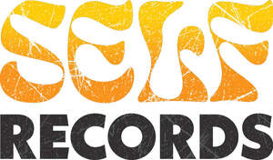

Trade Mark Journal No.2025/024 13 June 2025
UK00004205254 18 May 2025 (9,16,18,25,35,40)
Mark 1

Mark 2
- Class 9
- Vinyl records; Gramophone records; Disc records; Phonograph records; LP records; Phonographic records; Phonograph records featuring music; Pre-recorded phonograph records; Records [sound recordings]; Sound records; Phonograph tapes; Recorded tape cassettes; Record decks; Gramophone record players; Recorded tapes; Record player turntables; Tape recordings of music; Phonograph record players; Cleaning apparatus for phonograph records; Music tapes; Tapes for bearing audio recordings; Recording discs; Sound recording tapes; Tape cassettes; Blank audio cassette tapes; Audio tape cassettes; Tape recording machines; Blank record disks; Books recorded on tape; Radio cassette tape recorders; Head cleaning tapes for audio cassette recorders; Recorded video tapes; Music cassettes; Styli for record players; Sound recording discs; Books recorded on disc; Audio tapes; Cassette head cleaners for audio tapes; Musical recordings in the form of discs; Digital audio tapes; Audio digital tapes; Recorded discs bearing sound; Digital recordings; Head cleaning tapes [recording]; Record players; Music recordings; Protective covers adapted for records; sleeves for holding and protecting records; cleaning apparatus for phonograph records; cleaning apparatus for sound recording discs; CDs; CD players; CD cases.
- Class 16
- Posters; Advertising posters; Mounted posters; Posters made of paper; Flyers; Printed flyers; Printed informational flyers; Printed leaflets; Graphic prints; Postcards; Printed brochures; Postcards and picture postcards; Graphic art prints; Art prints; Prints; Leaflets; Stickers; Printed paper labels; Paper and cardboard; Cardboard; Cardboard boxes; Cardboard packaging.
- Class 18
- Carrying bags.
- Class 25
- Shirts; Polo shirts; Long-sleeved shirts; Short-sleeved shirts; T-shirts; Casual shirts; Printed t-shirts; Tank-tops; Hoodies; Jeans; Caps; Baseball caps; Sports caps; Jumpers.
- Class 35
- Online retail services for downloadable digital music; Administration of the business affairs of retail stores; Retail services in relation to musical toys; Online retail services in relation to phonograph records; Retail services in relation to disc records; Retail services in relation to compact discs; Arranging and conducting of marketing events; Online retail services in relation to records [sound recordings]; Retail services in relation to lP records; Retail services in relation to gramophone records; Online retail services in relation to clothing; Retail services in relation to t-shirts; Online retail services in relation to digital video discs [DVDs]; Advertising, marketing and promotional services; Retail services in relation to sound records; Retail services in relation to clothing; Retail services in relation to video compact discs; Online retail services in relation to compact discs [audio-video]; Retail services in relation to records [sound recordings]; Retail services in relation to recorded compact discs; Business promotion; Marketing the goods and services of others; Online retail services in relation to recorded compact discs; Retail services in relation to phonograph records; Online retail services in relation to sound records; Advertising services relating to the sale of goods; Online retail services in relation to t-shirts; Online retail services in relation to compact discs; On-line advertising and marketing services; Retail services in relation to clothing accessories; Online retail services in relation to posters; Retail services in relation to digital video discs [DVDs]; Retail services in relation to posters; Online retail services in relation to gramophone records; Promoting the sale of goods and services of others through promotional events; Retail services in relation to audio compact discs; Online retail services in relation to vinyl records; Online retail services in relation to disc records; Retail services in relation to pre-recorded DVDs featuring music; Online retail services in relation to lP records; Online retail services in relation to pre-recorded DVDs featuring music; Retail services in relation to vinyl records; Retail services connected with the sale of cleaning preparations, cleaning fluids, cleaning sprays, wipes incorporating cleaning preparations, anti-smear agents for cleaning purposes, protective covers adapted for records, sleeves for holding and protecting records, cleaning apparatus for phonograph records, cleaning apparatus for sound recording discs, cleaning brushes, cleaning cloths, anti-static cloths.
- Class 40
- T-shirt printing.
SELF RECORDS LIMITED